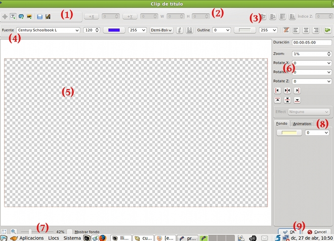
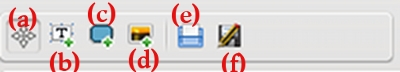
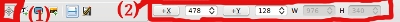
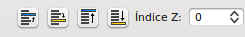
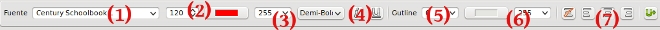
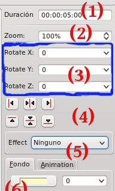
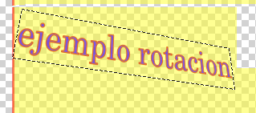
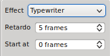
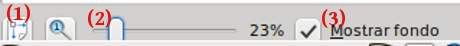
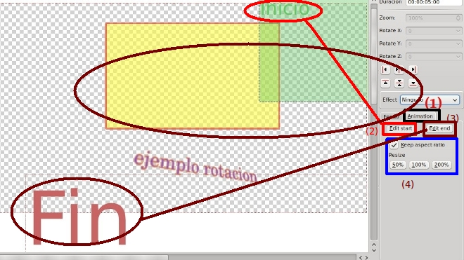

1.1. Aspectos Teóricos
Para iniciar el editor de títulos, debemos disdtinguir 9 apartados como muestra la imagen:

| zona 1: barra de herramientas |
Se encuentra la barra de herramientas que nos permiten generar los diversos elementos de que puede componer nuestro título.  (a) La herramienta de selección (b) Herramienta de texto (c) Herramienta rectángulo: nos permite generar un fondo en nuestro título. (d) Herramienta Imagen: Nos permite añadir imágenes a nuestro título, bien de fondo, bien como añadido. (e) Abrir documento: nos permite abrir títulos generados con anteriodad, para ello debemos grabar nuestros títulos utilizando la herramienta de grabación (f)
|
| zona 2: Modificar aspecto |
Este apartado nos permite cambiar la posición en el cuadro (X e Y) y el tamaño (altura - H y anchura - W) del elemento seleccionado en ese momento en nuestro título. Para ello debemos seleccionar el elemento (1) y cambiar los parámetros.  Nota: no todos los elementos permiten modificar todos los atributos
|
| zona 3: capas |
El Editor de títulos nos permite ubicar varios elementos (texto, imagen, fondo) unos sobre otros utilizando capas. En la zona de capas podemos indicar la posición de cada elemento.

Utilizando cada uno de los botonos podemos subir una capa, bajar una, colocarlo en la zona superior o enviarlo a la zona inferior.
|
| zona 4: Barra de herramientas de Texto |
Esta barra de herramientas nos permite modificar diversos aspectos del texto que se ha insertado en nuestro clip de título.  (1) Elegir el tipo de Litografía o letra. (2) Modificar el tamaño (píxeles) de la letra y el color (3) Indicar el grado de transparencia u opacidad (0- transparencia 255-sin transparencia) (4) La forma de letra (negrita, cursiva, subrayada, entre otras) (5) Tamaño del contorno de la letra (6) Color y transparencia (0-255) del contorno (7) Alineación de nuestro texto |
| zona 5: Edición de nuestro título |
En la zona central se encuentra la zona de edición. En ella introduciremos los diversos elementos que componen nuestro titulo. |
| zona 6: Otros aspectos |
En este apartado podemos modificar el tamaño de nuestro objeto (texto, imagen, ..) en la zona de edición, indicar la duración del clip, modificar la posición del mismo (x,y,z), entre otros aspectos.  (1) Modificar la duración de nuestro título. HH:MM:SS:dd (2) Podemos modificar la relación de nuestro objeto respecto al tamaño original (3) Podemos rotar nuestro objeto en un plano de tres dimensiones. Indicaremos un valor entre -360º y 360º. Ejemplo: si modificamos un texto y cambiamos los valores x=25, Y=-22 y Z= 11 el resultado lo mostramos en esta imagen.

(4) Se indica la alineación del objeto actual respecto a la totalidad del Título. Izquierda, centro y derecha (horizontal) y superior, centro e inferior (vertical). (5) Podemos introducir, especialmente, con textos pequeños efectos. 
(6) Nos permite elegir el fondo de nuestro título y su grado de transparencia (0-transparencia total, 255-opaco) |
| zona 7: zoom general |
Cuando deseamos recuperar el zoom de nuestra edición a la pantalla del sistema utilizamos el (1) Fit Zoom. Si deseamos aumentar el zoom para observar zonas amplificadas (2) utilizamos el deslizador. Si deseamos observar el grado de transparencia sobre alguno de los clips de video de la línea de tiempo debemos (3) activar el mostrar fondo.

|
| Zona 8: Animación del Título |
Si deseamos que nuestro mensaje o título comience en una zona determinada y con un zoom determinado y finalice en otro zona de nuestra pantalla (al momento de reproducirse en la línea de tiempo) debemos seleccionar la pestaña (1) Animation. Elegir la zona (2) desde donde deseamos que se inicie el desplazamiento. Para ello disponemos de unas marcas de agua de inicio y fin. Elegimos la de inicio y la desplazamos, utilizando un zoom y guardando el aspecto original (4), a la zona de nuestro título deseado. En la imagen inferior proponemos iniciar el mensaje en la zona superior derecha y finalizarla en la zona inferior izquierda. Para la zona del final (3) editamos la zona final.  |
Jo.R.C.A. 2004 - 2011

Edición de Audio y Video con Software Libre by José Ramón Cerdeira Alonso is licensed under a Creative Commons Reconocimiento-No comercial-Compartir bajo la misma licencia 3.0 España License